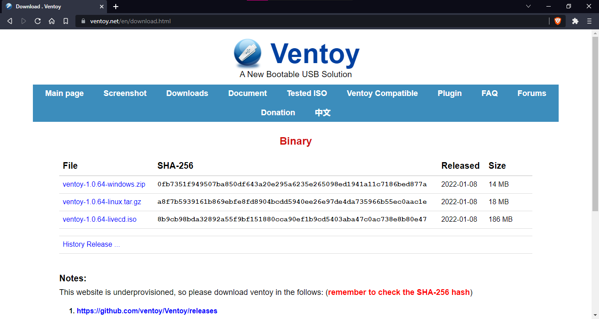
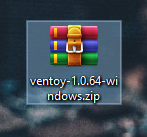
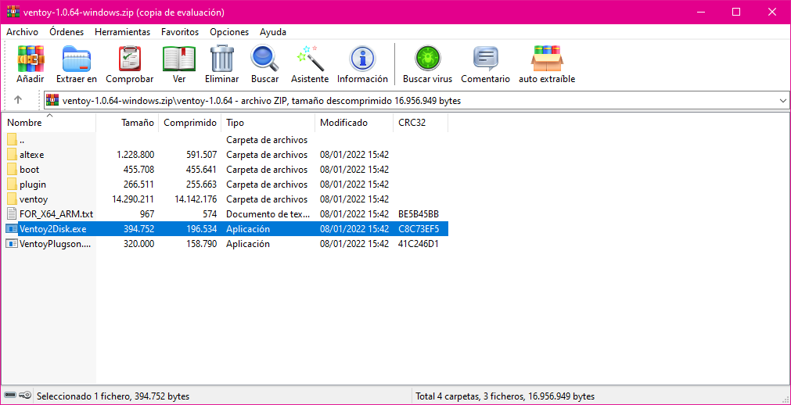
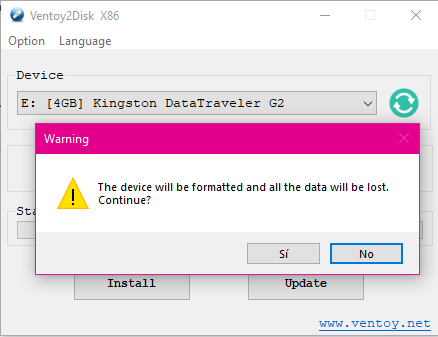
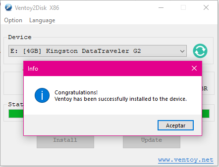
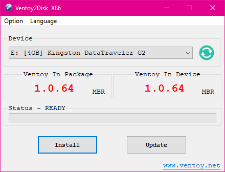

Es una herramienta que convierte a una memoria externa en bootable y a la vez funcional, hace falta esperar con cada proceso de cargar como en otros softwares como Rufus o Yumi, aquí su pagina web oficial Ventoy

Descargamos en este caso la version Windows

No hace falta descomprimir, doble click en el ejecutable

Selecionamos el dispositivo a convertir, se nos borrará la información

Ya está convertido

Ademas podemos instalar actualizaciones futuras, ya solo hace falta ejecuarlo en una maquina

|